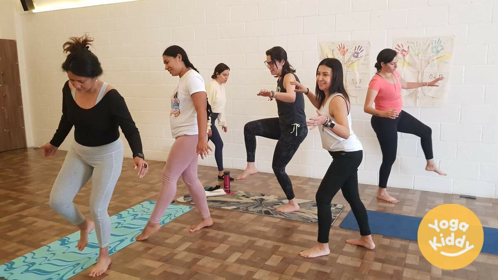
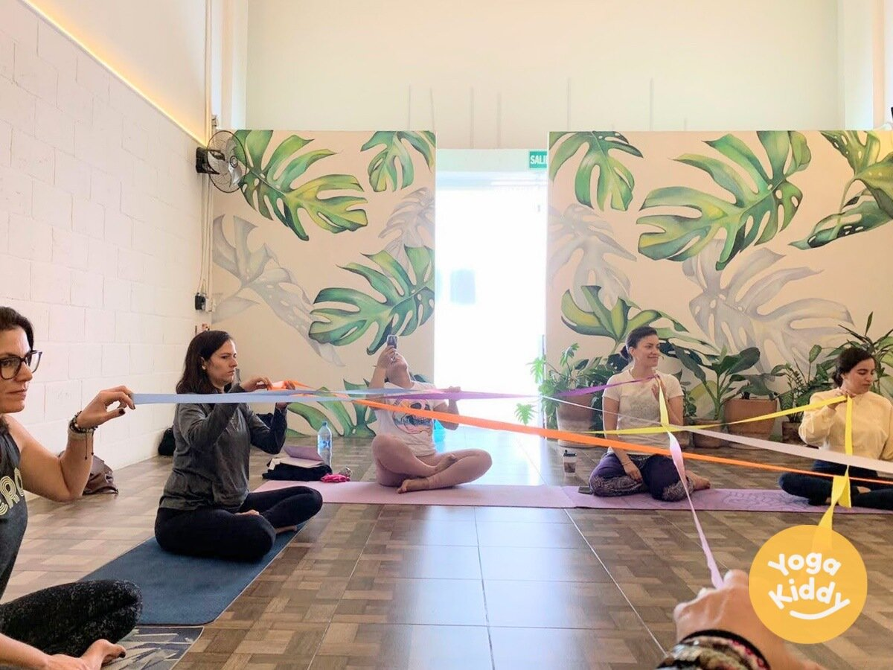
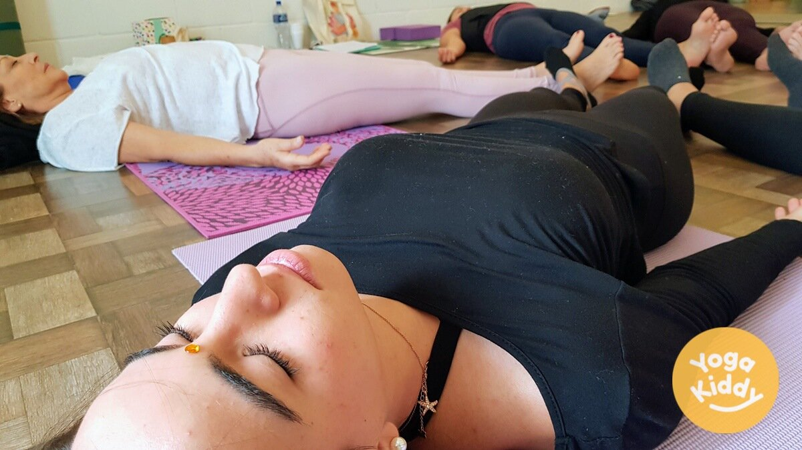
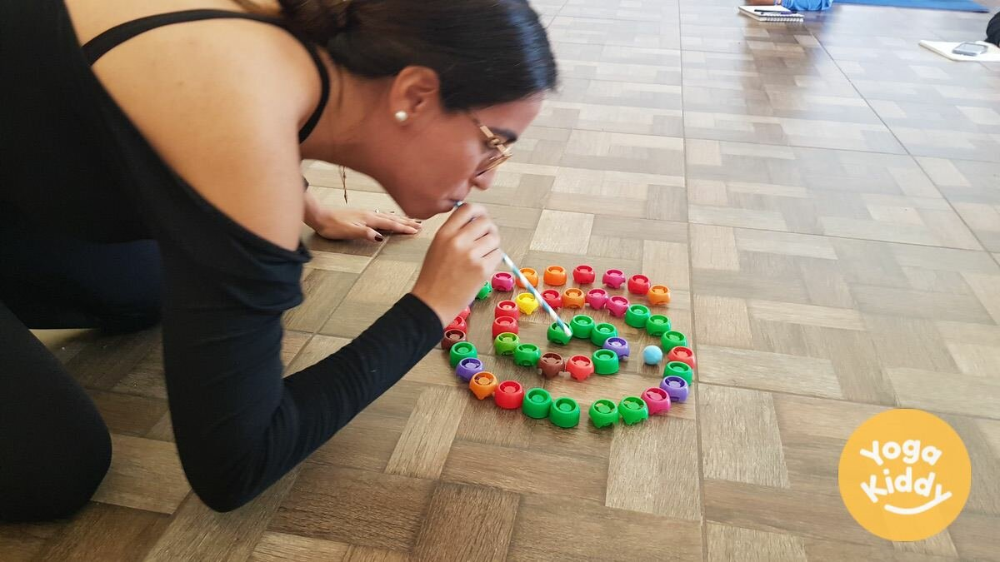
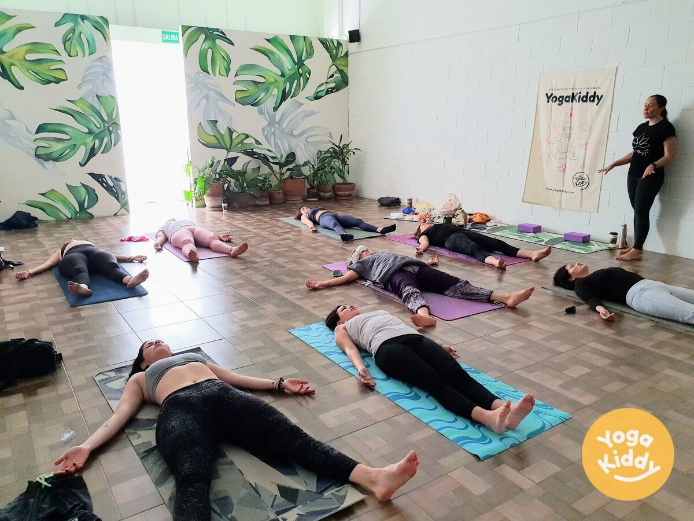
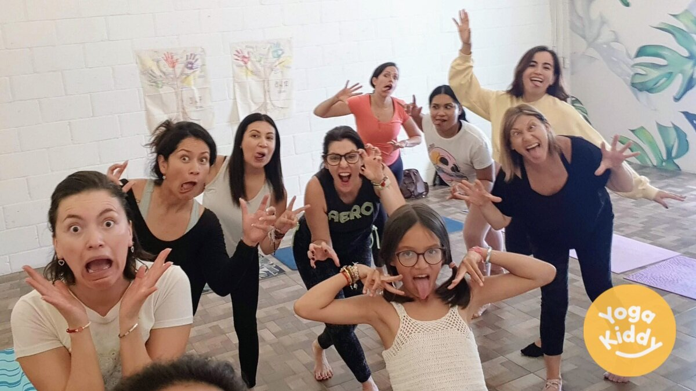
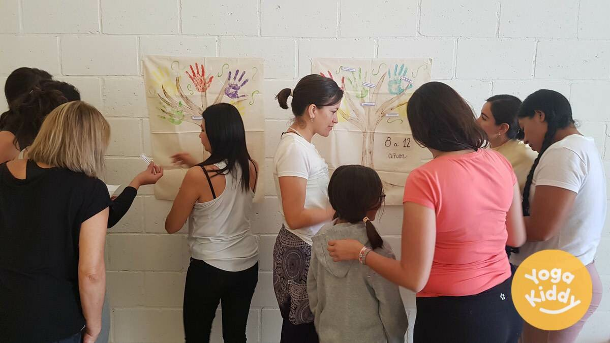
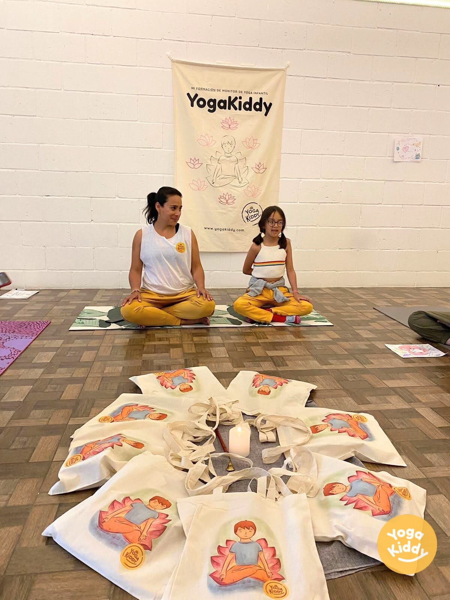

El fin de semana 19 y 20 nov 2022 marcó una ocasión especial para un grupo de mujeres dedicadas en Guadalajara, México, ya que se embarcaron en un viaje para profundizar su comprensión y habilidades en la enseñanza de yoga a los niños. La formación, que duró dos días, consistió en 18 horas de inmersión en el aprendizaje y la práctica, dejando a las participantes inspiradas, empoderadas y con ganas de compartir sus nuevos conocimientos con la próxima generación.

El programa se diseñó para que fuera a la vez informativo y entretenido, con una variedad de técnicas y actividades diseñadas específicamente para atraer a las mentes y los cuerpos jóvenes. Los instructores tenían experiencia y conocimientos, y guiaron a los participantes a través de una variedad de posturas de yoga, ejercicios de respiración y prácticas de meditación, al tiempo que compartían ideas sobre cómo hacer que el yoga sea divertido y accesible para los niños.

A lo largo de la formación, los participantes tuvieron la oportunidad de poner en práctica lo que habían aprendido y recibiendo comentarios de los instructores. Este enfoque práctico resultó muy valioso, ya que los participantes pudieron comprender mejor cómo adaptar y ajustar su enseñanza a los distintos grupos de edad y capacidades.

Uno de los aspectos más destacados de la formación fue una sesión especial sobre cómo incorporar el juego en las clases de yoga para niños. Los instructores aportaron ideas creativas y prácticas para incorporar juegos y cuentos a las clases, creando un entorno en el que los niños pueden aprender y explorar de forma divertida y atractiva.

La formación también cubrió aspectos importantes como los beneficios del yoga para los niños, los posibles retos que pueden surgir y las formas de superarlos. Los participantes también recibieron orientación sobre cómo acercarse a los padres y tutores y cómo generar confianza con sus alumnos, de modo que pudieran crear un espacio seguro y cómodo para ellos.

El fin de semana concluyó con una ceremonia de graduación, en la que los participantes recibieron certificados de asistencia y tuvieron la oportunidad de compartir sus experiencias y conclusiones. Los comentarios de todos los asistentes fueron abrumadoramente positivos, y muchos expresaron su entusiasmo por compartir sus nuevos conocimientos y habilidades con los niños de sus comunidades.

En general, la capacitación de Yoga para niños en Guadalajara, México, fue un éxito rotundo, y capacitó a un grupo de mujeres para convertirse en maestras de yoga seguras de sí mismas y capacitadas para la próxima generación. La formación proporcionó a las participantes las herramientas, los conocimientos y el apoyo necesarios para influir positivamente en la vida de los niños a través de la práctica del yoga.
